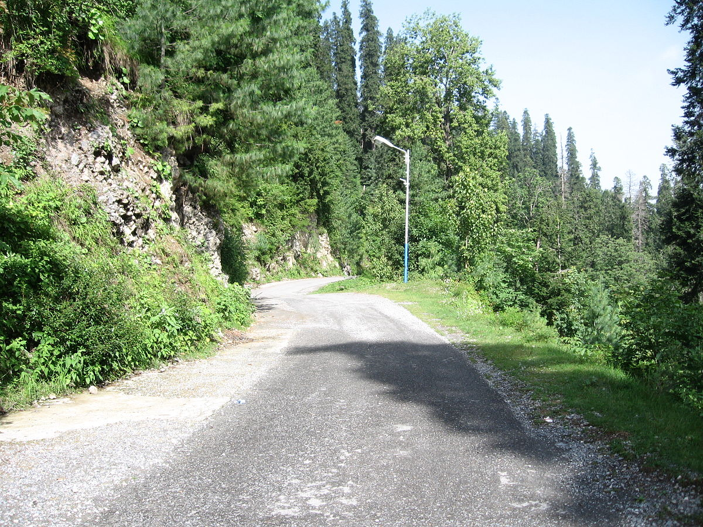
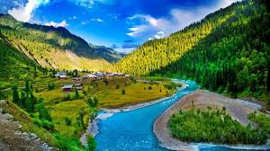
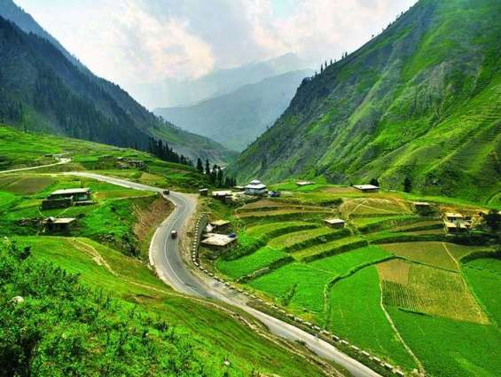
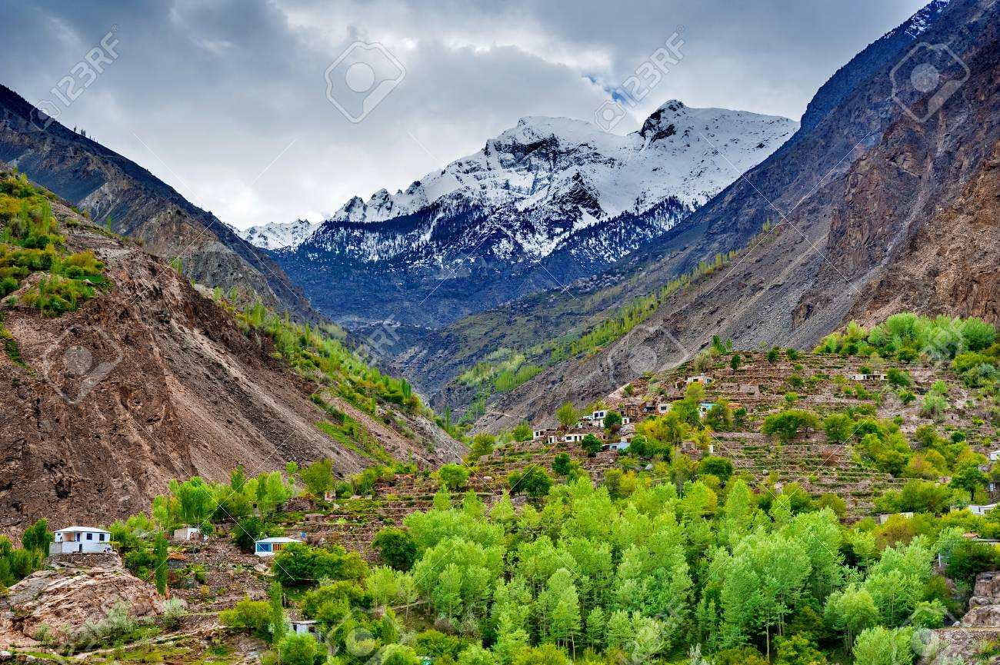
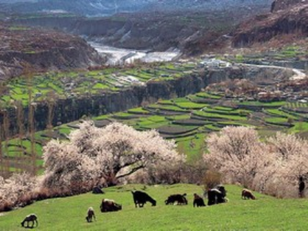
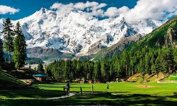
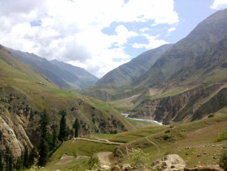
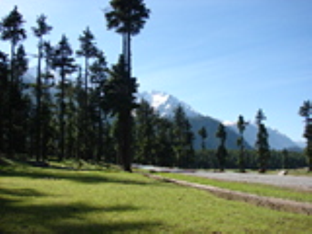
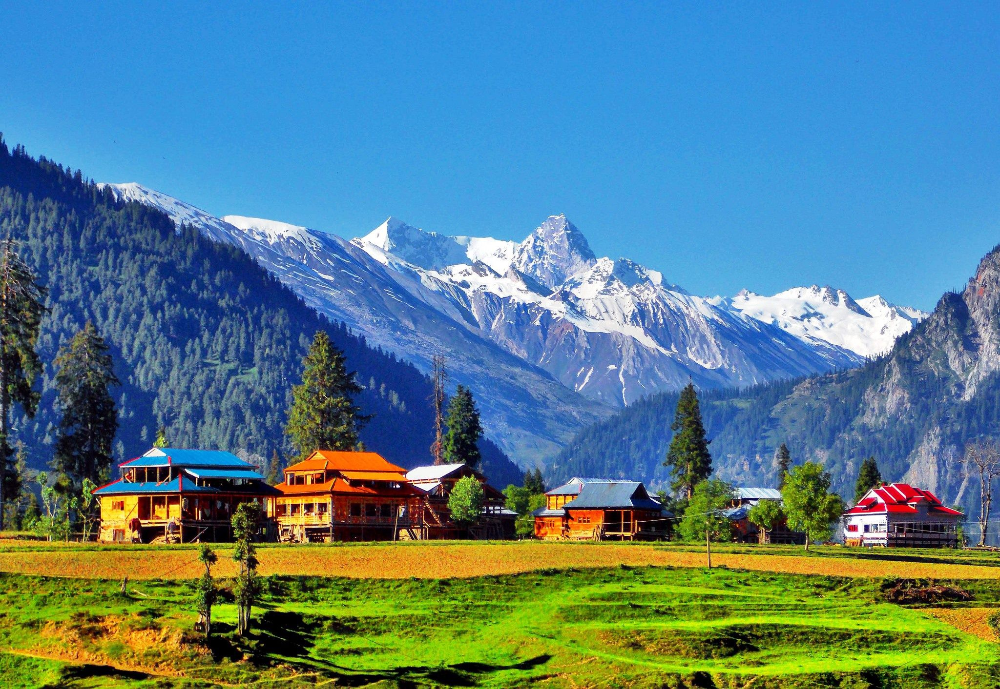

2 Days Trip to Lake Saif-ul-Mulook
PKR:7500 per person
PKR:7500 per person
Day 01 :
Pick up from Islamabad, Sightseeing via Balakot, Kiwai, Kaghan and Narran. (8 – 10 hrs)
Night Stay:
Naran
Day 02 :
Exploration of Lake Saiful Malook. Drive back to Islamabad. (8 - 10 hrs)
FACILITIES INCLUDED IN PACKAGE
Hotel Accommodation - 3 to 4 persons sharing.
Separate room for couple: PKR 3,000 (Additional Cost)
Transport from Islamabad to Kashmir.
Jeeps
Toll taxes & Fuel expenses
Breakfasts and Dinner
Bonfire & BBQ.
Driver as a Guide

1 Day Trip To Murree Nathiagali
PKR:2000 per person
PKR:2000 per person
TRIP DETAILED ITINERARY
Pick up from Islamabad and departure for Nathiagali sightseeing of changla gali, jhika gali, Sajjan
Gali. Visit of Ayubia National Park, Monkey point, Patriata Chair lift, Mall Road and adjoining
places of Murree.
Drive back to Islamabad in evening
FACILITIES INCLUDED IN PACKAGE
Transport from Islamabad.
Toll taxes & Fuel expenses
Breakfast
Driver as a Guide

3 Days and 2 Nights Trip to Neelum Valley
PKR:20000 per person
PKR:20000 per person
Day 01 :
Pickup from Islamabad, visit of Kashmir waterfall and Kohala picnic point. Departure for Neelum
Valley. Visit of Noseri Waterfall, Neelum Jhelum, Kutton waterfall
Night Stay:
Kutton
Day 02 :
Departure for Ratti Gali Base camp. Horse ride / Trek to Ratti Gali Lake.
Night Stay:
Keran / Ratti Gali (Camping)
Drive back to Islamabad via Murree. Short stay at Mall Road.
FACILITIES INCLUDED IN PACKAGE
Hotel Accommodation - 3 to 4 persons sharing.
Separate room for couple: PKR 3,000 (Additional Cost)
Transport from Islamabad to Kashmir.
Jeeps for Lake Ratti Gali base camp.
Toll taxes & Fuel expenses
Breakfasts and Dinner
Bonfire & BBQ.
Driver as a Guide

3 Days and 2 Nights Trip to Swat
PKR:30000 per person
PKR:30000 per person
Day 01 :
Pickup from Islamabad, visit of Neelum Point, Kohala Picnic Point, Kashmir Waterfall and departure
for Muzzafarabad. Visit of Pir Chinsai and Forts of Muzzafarabad.
Night Stay: Muzzafarabad
Day 02 : Departure for Neelum Valley. Visit of Noseri
Waterfall, Neelum Jhelum, Kutton waterfall, Keran,
Athmuqam and Upper Neelum.Night Stay: Keran (Neelum Valley)
Day 03 :Departure for
Islamabad via Murree Road. Short stay at Mall Road.
FACILITIES INCLUDED IN PACKAGE
Transport - Toyota Corolla / Pajero
Sightseeing
Fuel
Accommodation
Guide

5 Days and 4 Nights Trip to Kaghan Valley
PKR:40000 per person
PKR:40000 per person
Day 01 :
Departure for Shogran via Ghari Habibullah, Kiwai. Sightseeing of shogran.
Night Stay:
Shogran
Day 02 :
Visit of Siri and Paye meadows. Sightseeing of Lakes and lush green valley.
Night Stay:
Shogran
Day 03 :
Full day visit of Lake Saif ul Mulook & Lulusar lake.
Night Stay:
Kaghan
Day 04 :
Full Day Visit of Babusar Top & adjoining places.
Night Stay:
Naran
Day 05 :
Visit of Naran Bazar local sightseeing of Naran and Kaghan. Drive back to Islamabad.
FACILITIES INCLUDED IN PACKAGE
Transport - Toyota Corolla / Pajero
Sightseeing
Fuel
Accommodation
Guide

5 Days and 4 Nights Trip to Hunza Valley
PKR:50000 per person
PKR:50000 per person
Day 01 :
Departure for Naran via Islamabad. Local sightseeing of Balakot, Kuwai, Kaghan and Babusar Top.
Night Stay:
Naran
Day 02 :
Departure for Hunza via Chilas. Sightseeing of Nanga Parbat from Nanga Parbat View Point.
Night Stay:
Karimabad Hunza Valley
Day 03 :
Visit of Khunjareb Pass (China Border) via Attabad lake and Attabad tunnel. Sightseeing of Passu
Cones.
Night Stay:
Hunza Valley
Day 04 :
Visit of Baltit Fort (600 Years Old) & Altit Fort (800 Years Old) and tour of Eagle Nest.
Night Stay:
Hunza Valley
Day 05:
Departure for Naran. Sightseeing of Naran and Kaghan Valley.
Night Stay:
Naran
FACILITIES INCLUDED IN PACKAGE
Transport - Toyota Corolla / Pajero
Sightseeing
Fuel
Accommodation
Guide

Gilgit & Hunza (8 Days /7 Nights)
PKR:100000 per person
PKR:100000 per person
Day 1 :
Pick up from Islamabad , enroute Chilas, night stay Chilas (12 - 14 Hours drive)
Day 2 :
enroute Gilgit , rest day Gilgit , local sight seeing night stay Gilgit
Day 3 :
Local sight seeing Gilgit , Night stay Gilgit
Day 4 :
Enroute Hunza , Night stay Hunza
Day 5 :
Local sight seeing Hunza , night stay Hunza
Day 6 :
Local sight seeing Hunza Duikar and night stay Hunza
Day 7 :
Check out and back to Chilas , night stay Chilas
Day 8 :
Check out for Islamabad
FACILITIES INCLUDED IN PACKAGE
Transport - Toyota Corolla / Pajero
Sightseeing
Fuel
Accommodation
Guide

Fairy Meadows(6 Days/5 Night)
PKR:80000 per person
Day 1 : Pick up from Islamabad and enroute Besham, Night stay Besham (7 hrs)
Day 2 :Enroute Chilas & Raikot, Night stay at Raikot (8-9 Hrs)
Day 3 :Early morning Jeep to Tattu Village & then 3 hrs Trek to Fairy Meadows
Day 4 :Local sight seeing at Fairy Meadows & local exploration around Bayal Camp on your
own. Night stay Fairy Meadows
Day 5: Trek Down to Tattu Village & Jeep to Raikot, Night stay Chilas
Day 6 :Enroute Back to Islamabad (12-13 hrs)
FACILITIES INCLUDED IN PACKAGE
Transport - Toyota Corolla / Pajero
Sightseeing
Fuel
Accommodation
Guide

Naran Kaghan(3 Days/2 Nights)
PKR:35000 per person
Day 1 :
Pick up from Islamabad , Sight seeing enroute Balakot, Kiwai, Kaghan & Naran, night stay Naran (8
hrs)
Day 2 :
Local Sight seeing Naran, Half day Jeep to lake Saiful Malook and night stay Naran
Day 3 :
Check out and back to Islamabad (8 hrs)
FACILITIES INCLUDED IN PACKAGE
Transport - Toyota Corolla / Pajero
Sightseeing
Fuel
Accommodation
Guide

Kalam Swat(4 Days/3 Nights)
PKR:50000 per person
PKR:50000 per person
Day 1 :
Pick up from Islamabad, enroute Kalam via Mingora, Night stay Kalam
Day 2 : Jeep to Mahodand Lake & Ushu Valley, Night stay Kalam Swat
Day 3 : Back to Mingora Swat , Malam Jabba, night stay Mingora Swat / Marghzar Swat
Day 4 : Check out and back to Islamabad
FACILITIES INCLUDED IN PACKAGE
Transport - Toyota Corolla / Pajero
Sightseeing
Fuel
Accommodation
Guide

Azad Kashmir (5 Days / 4 Nights)
PKR:55000 per person
PKR:55000 per person
Day 1:Pick up from Islamabad, enroute via Murree, Kohala, Kashmir Absaar, arrival in Muzaffarabad, check in at hotel, Night stay Muzaffarabad (5 hrs)
Day 2:Day trip to Pir chinasi peak, night stay in Muzaffarabad.
Day 3: Visit ot Neelum valley AJK, Keran Kuttan, Athmuqam, and night stay in Muzaffarabad
Day 4: Day tour to Jehlum Valley AJK & Zalzal Lake & Chokothi Boarder, Night stay Muzaffarabad
Day 5: Check out and back to Islamabad via Murree (check out)
FACILITIES INCLUDED IN PACKAGE
Transport - Toyota Corolla / Pajero
Sightseeing
Fuel
Accommodation
Guide